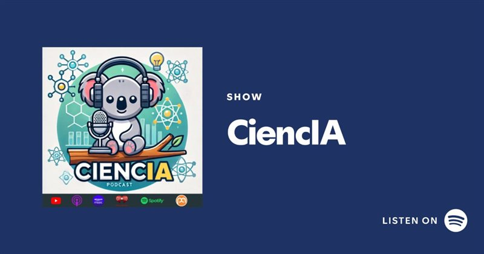

Spotify
CiencIA
Documentos científicos y tesis narrados con inteligencia artificial para acercar el conocimiento a todos.
Scientific papers and theses narrated with AI to make research accessible and engaging for everyone.
利用人工智能朗读科学论文与学位论文，让学术知识变得通俗易懂、触手可及。